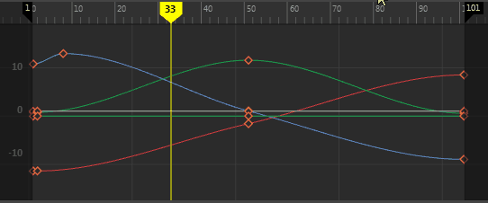

默认情况下，在“曲线图编辑器”(Graph Editor)中，您只需单击和拖动，便可在曲线上移动选定的关键帧。

在曲线上移动关键帧
- 选择要编辑其曲线的动画对象。
- 在“曲线图编辑器”(Graph Editor)的“编辑”(Edit)菜单中，选择。
- 在“图表视图”(Graph View)区域中选择一个或多个关键帧，然后拖动以移动它。移动关键帧会更改曲线的形状。（有关设置，请参见“曲线图编辑器”(Graph Editor)的“移动关键帧选项”(Move Keys options)。）
-
如果要禁用单击编辑工作流，可以禁用“动画”(Animation)首选项(在“设置”(Settings)下)中的“按住鼠标左键并拖动可移动选定关键帧”(Left-dragging moves selected keys)首选项，然后使用“曲线图编辑器”(Graph Editor)工具栏上的“移动最近拾取的关键帧工具”(Move Nearest Picked Key Tool)
 来使用鼠标中键显式移动关键帧。（在“动画”(Animation)首选项的“曲线图编辑器”(Graph Editor)标题中禁用“按住鼠标左键并拖动可移动选定关键帧”(Left-dragging moves selected keys)。）
来使用鼠标中键显式移动关键帧。（在“动画”(Animation)首选项的“曲线图编辑器”(Graph Editor)标题中禁用“按住鼠标左键并拖动可移动选定关键帧”(Left-dragging moves selected keys)。）
- 可以在“曲线图编辑器”(Graph Editor)的“移动关键帧选项”(Move Keys options)中设置“移动关键帧”(Move Keys)工具的行为。
提示： 若要将关键帧一次移动一帧，可按 Shift + 9 将其向左移动，按 Shift + 0 将其向右移动。